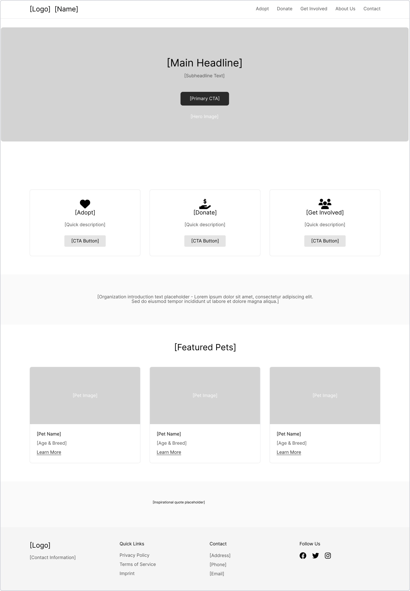
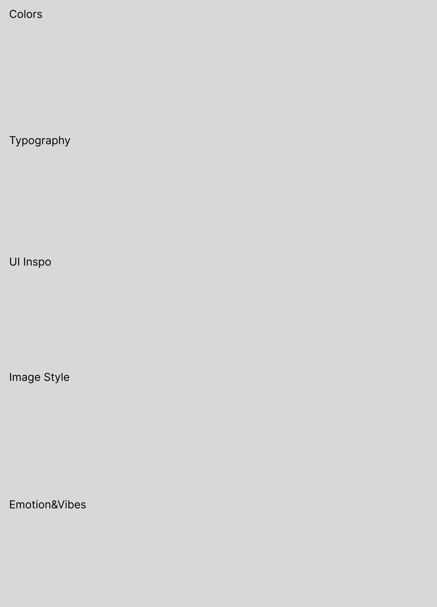

Pfotenglück Website Redesign
Tools: Figma, FigJam, Photoshop
"Pfotenglück" is a UX/UI redesign for a local animal shelter focused on improving user engagement for adoptions, donations, and volunteering. The design process was guided by emotional storytelling, accessibility, and mobile-first principles.
Project Scope:
- User research & goal definition
- Site map, user flow and wireframes for 5 key pages
- Moodboard and visual direction
- Responsive UI design (in progress)
Design Highlights:
Clean layout, intuitive filtering for adoptable animals, donation call-to-actions, and visual consistency rooted in warmth and trust.
Outcome:
This project demonstrates my ability to plan, structure, and execute user-centered design from research to visual design. Currently preparing final UI screens.


[ UI Screens will be added here ]
[ Final Case Study PDF download will be available soon ]